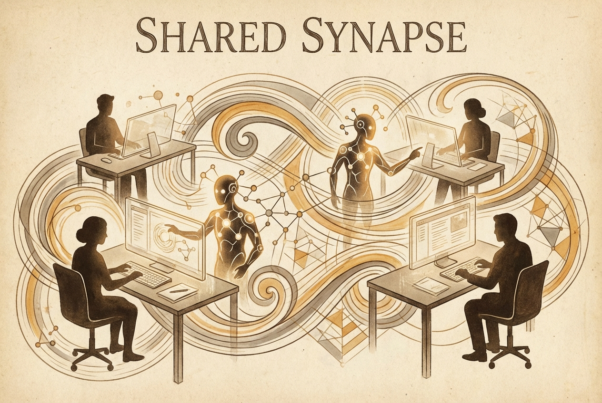

Machines and Makers Find Common Ground in Shared Workspaces
A new paradigm emerges as code agents move beyond chat windows into visual environments where both human and artificial intelligence operate on the same canvas.

The relationship between human creators and their artificial counterparts has, until recently, resembled something like a long-distance correspondence — messages exchanged across a void, screenshots pasted into chat windows, instructions given and sometimes followed. The friction was palpable. Every interaction required translation: from visual intention to verbal description, from spatial understanding to textual approximation.
But a quiet revolution is underway. A new class of tools has begun to bridge this gap, not by making agents smarter or humans more precise, but by giving both parties something they’ve lacked: a shared medium. The agent edits files on disk. The human sees, selects, and guides the rendered result. Both operate on the same representation, in real time, each bringing their particular strengths to the collaboration.
This is not the AI future that was promised by breathless press releases — no sentient machines, no obsolete workers. It is something more practical and, perhaps, more interesting: infrastructure for a new kind of partnership, where the boundary between human intent and machine capability becomes productively blurred.
The implications extend beyond individual productivity. When skills can evolve based on cross-session history, when modes can be shared through marketplaces, the knowledge of one collaboration enriches all future ones. A presentation designer’s preferences inform the agent’s next session. A web developer’s patterns become reusable templates.